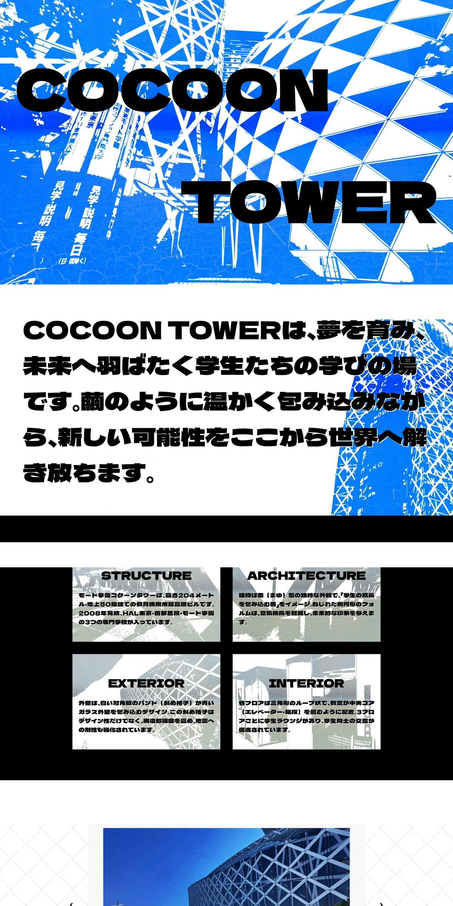
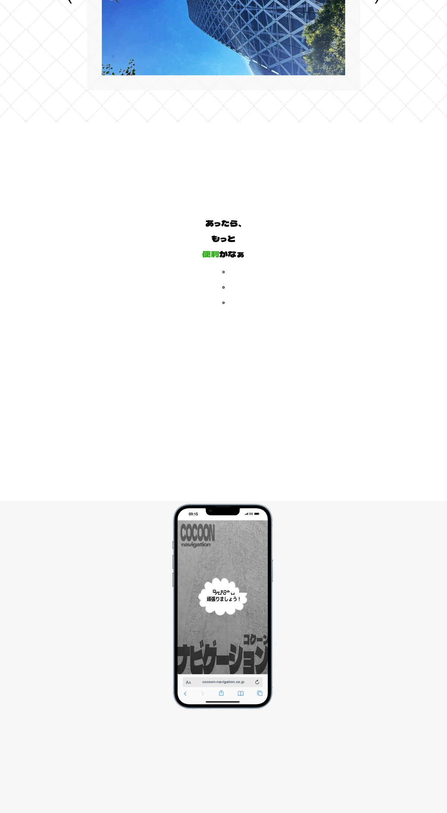
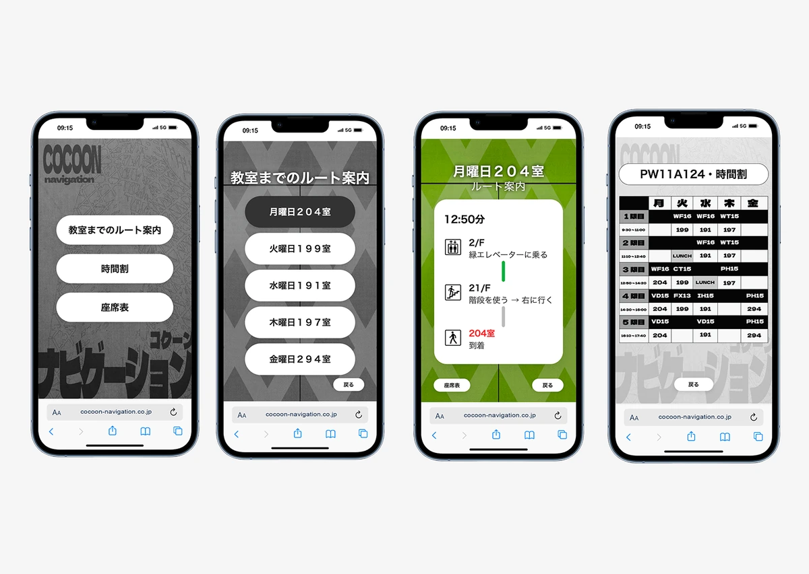

Project information
- Range制作範囲
- 内容企画 / 写真撮影 / 経路調査・時間計測 / 校内ナビのUIデザイン
- Tools使用ツール
- Figma / Visual Studio Code
- Technologies使用技術
- HTML / CSS / JavaScript / Canvas API
- Overview作品について
- 東京モード学園の校舎を題材にしたグループ制作のサイトです。校舎が入るコクーンタワーの建築紹介に加え、目的の階や教室への行き方、時間割を確認する校内ナビゲーションのデモを制作しました。
- Purpose制作目的
- 50階建てのコクーンタワーでは、初めて来校するユーザーにとって、目的の階や教室への行き方が分かりにくいと考えました。東京モード学園の校内案内として、移動先と時間割を確認できるナビゲーションを提案し、授業に向かう前に必要な情報を調べられる形を目指しました。
- Targetターゲット
- 新入生、入学を考えている人、来校するユーザーを想定しています。建物の特徴を知りたい人と、教室などへの行き方を確認したい人の両方に向けた内容です。
- Information情報設計
- デモでは、目的地へのルート、教室、座席、時間割をスマートフォン風の画面にまとめています。「どの階へ行くか」「教室はどこか」「次の授業は何か」を確認する場面を考え、移動と授業に関する情報を整理しました。校内案内を使いたい人が建築紹介と混同しないよう、紹介ページとデモは分けています。
- Designデザインの工夫
- 校内ナビのデモを制作の中心に置きました。50階建ての校舎で目的の階へ向かう場面を考え、ルートや教室、時間割をスマートフォン風の画面で確認する構成です。操作を複雑にせず、必要な情報を見つけて移動先を確認できることを目指しました。ページ内にデモを埋め込み、画面を切り替えながら案内の流れを試せるようにしています。
- Period制作期間
28日間
企画・ワイヤーフレーム：12日
デザイン：10日
実装：6日- Timing制作時期
- 2025年5月
Final design


